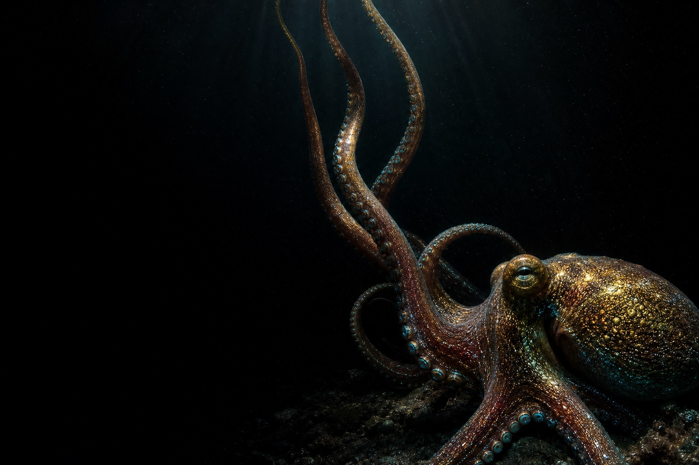

Local-first source memory
Descend from bookmark chaos into a source reef.
MemoReef turns saved links into private Markdown Drops with review state, local reports, searchable context, and agent-ready briefs.
python3 -m memoreef.cli pilot --bookmarks bookmarks.html --vault /tmp/memoreef-pilot
The surface layer
Saved links become a junk drawer.
Bookmarks mix great sources with duplicates, stale rumors, private files, and half-remembered research. When an agent needs context later, the useful material is still trapped in a browser export.
Duplicates drift together
Exact URLs, same-domain clusters, and similar titles are reported locally before they waste review time.
Private sources stay private
File URLs and personal research remain on disk. The static app opens directly in the browser.
Status is explicit
Drift, Reef, Deep, discarded, and Pearl states are written into Markdown frontmatter.
Nothing requires a server
The pilot creates files you can inspect, back up, edit, sync, or delete yourself.
The reef layer
Review turns clutter into a local library.
Import a browser export, open the generated pilot app, review a small queue, then regenerate the local pages. The app stays calm and practical while the landing page carries the cinematic ocean.
Markdown Drops
Each saved source becomes a readable file with frontmatter, source URL, notes, and an agent brief section.
Review sessions
Focused JSON queues let you review Drift items, Pearls, projects, shoals, tags, hosts, or small samples.
Local reports
Duplicate reports, garden suggestions, search results, and project briefs are generated beside the vault.
Static app pages
Dashboard, tour, library, review, reports, briefs, pilot, and Drop detail pages open without a backend.
The handoff layer
Agents get briefs, not a swamp.
Project briefs collect selected Drops into local Markdown with source URLs, summaries, labels, gaps, and instructions that tell an agent to cite sources and avoid invented claims.
Source memory
Useful saves become reusable context for future work instead of disappearing into browser chrome.
Pearl selection
High-value sources can be marked and filtered for citation-quality handoffs.
Readable forever
The core archive is Markdown. MemoReef can improve, but your sources are not trapped.
Offline pilot
No account, subscription, AI API, network call, or server is needed to test the workflow.

Pilot-ready
Open it locally. Inspect every file.
MemoReef generates a premium static pilot app for your own bookmark export: dashboard, tour, library, review launcher, reports, briefs, checklist, and Drop detail pages.
rm -rf /tmp/memoreef-pilot python3 -m memoreef.cli pilot --bookmarks examples/bookmarks.html --vault /tmp/memoreef-pilot --review-limit 10 open /tmp/memoreef-pilot/MemoReef/app/pilot.html